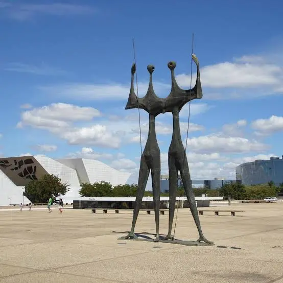
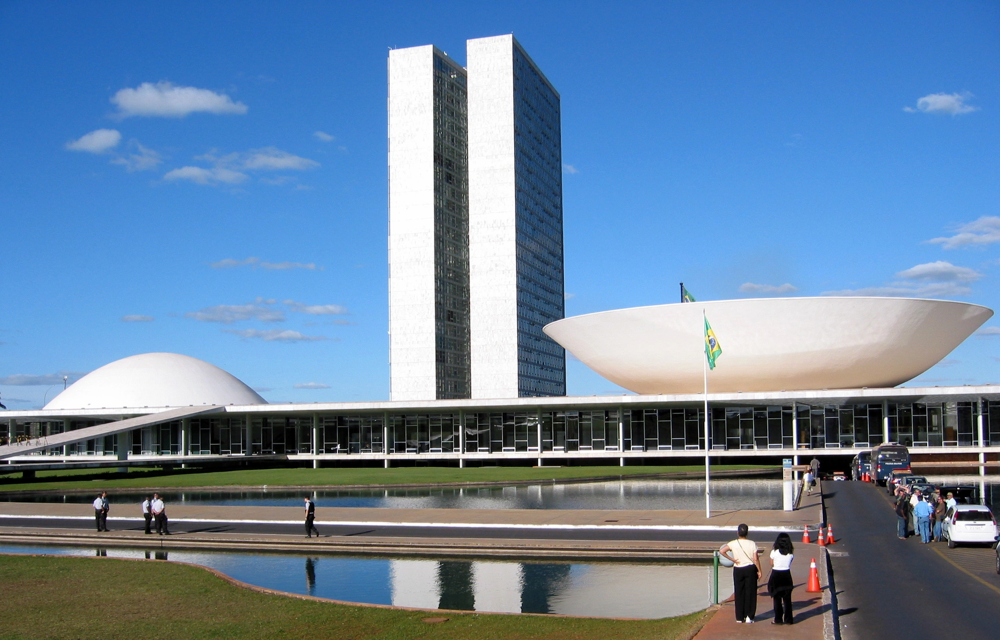

Monumentos famosos de brasilia


Curiosidades sobre Brasilia
- Primeira curiosidade
- Foi construída em apenas cerca de 4 anos e inaugurada em 21 de abril de 1960, durante o governo de Juscelino Kubitschek.
- Segunda curiosidade
- O formato da cidade é inspirado em um avião, embora os responsáveis pelo projeto tenham explicado que a ideia original era a de uma cruz, adaptada posteriormente ao terreno
- Terceira curiosidade
- Brasília foi planejada pelo urbanista Lúcio Costa e teve seus principais edifícios projetados pelo arquiteto Oscar Niemeyer.